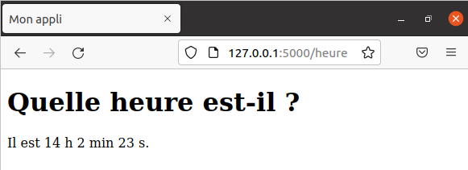

Flask est un micro-framework Python facilitant la création d’application Web. Il est parfait pour créer de manière simple et rapide de petites applications Web.
Voici la vidéo associée à cette activité : https://youtu.be/Ihp_cG7c2Rk
Voici un lien vers la documentation officielle de Flask (en anglais) : https://flask.palletsprojects.com/en/2.0.x/
Flask est un des frameworks Python les plus populaires (avec Django notamment) car il permet également de créer des applications Web très complexes.
Sur les ordinateurs du lycée, Flask est installé. Si vous souhaitez l’installer chez vous, il suffit d’exécuter la ligne de commande
pip install flask
On cherche ici la simplicité mais sachez qu’il est normalement préférable de créer un environnement virtuel dans lequel vous installerez Flask et tous les autres modules que vous souhaitez. La procédure d’installation est bien expliquée dans la documentation officielle de Flask : https://flask.palletsprojects.com/en/2.0.x/installation/.
Dans le dossier Documents on commence par créer un dossier appelé flask_demo dans lequel on crée un fichier appelé mon_app.py. On obtient l’arborescence suivante :
/Documents
/flask_demo
/mon_app.py
Avec un éditeur de texte, on écrit les lignes suivantes dans le fichier mon_app.py :
mon_app.py
from flask import Flask
app = Flask(__name__)
@app.route("/")
def bonjour():
return "<p>Bienvenue sur mon site !</p>"
if __name__ == '__main__':
app.run(debug=True)
Ces 7 lignes de code vont permettre de créer démarrer un serveur Web (local) contenant une page à laquelle on va pouvoir accéder dans un navigateur.
Analyse :
Flask et de l’utiliser pour créer une application appelée app grâce à l’instruction app = Flask(__name__).@app.route() qui indique à Flask quelle URL doit déclencher un appel à la fonction qui suit : ici, si un utilisateur visite l’URL '/' c’est-à-dire la racine de notre site, alors la fonction bonjour() est appelée et cette fonction renvoie le code HTML qui doit être affiché par le navigateur.app.run() lorsque le script mon_app.py est exécuté directement.On a donné la valeur
Trueau paramètredebugdeapp.run()pour que le serveur se relance automatiquement à chaque modification de fichiers et pour voir dans le navigateur les éventuelles erreurs (à enlever pour une application en production !)
Pour exécuter l’application, suffit d’exécuter le fichier mon_app.py dans un terminal.
Pour cela, on lance un Terminal, on se déplace dans le répertoire flask_demo et on exécute le script mon_app.py :

Cela permet de lancer un serveur Web à l’adresse http://127.0.0.1:5000/ (ne faites pas attention au message d’alerte).
Il n’y a plus qu’à se rendre à cette adresse dans un navigateur. Si tout s’est passé correctement, vous devriez voir la page suivante :

Remarques : Pour arrêter le serveur, il suffit de taper Ctrl + C dans le terminal. Pour relancer le serveur après un arrêt, il suffit d’exécuter à nouveau le script
mon_app.pyavec l’instructionpython mon_app.py.
On a écrit le code HTML à renvoyer dans la fonction bonjour(), ce n’est pas très pratique surtout lorsque le contenu HTML est important, et surtout cela nous fait mélanger du code Python et du code HTML, ce qui est à éviter.
Pour éviter cela, on peut créer ce que l’on appelle des templates, c’est-à-dire des modèles de documents HTML.
Modifions notre application pour illuster cela. On crée un dossier templates dans le répertoire flask_demo dans lequel on va créer un fichier index.html. Cela donne l’arborescence suivante :
/flask_demo
/templates
/index.html
/mon_app.py
Dans le template index.html on écrit le code :
index.html
<!DOCTYPE html>
<html lang="fr">
<head>
<meta charset="UTF-8">
<meta http-equiv="X-UA-Compatible" content="IE=edge">
<meta name="viewport" content="width=device-width, initial-scale=1.0">
<title>Mon appli</title>
</head>
<body>
<p>Bienvenue sur mon site !</p>
</body>
</html>
et on modifie notre script mon_app.py de la façon suivante :
mon_app.py
from flask import Flask, render_template
app = Flask(__name__)
@app.route("/")
def bonjour():
return render_template("index.html")
if __name__ == '__main__':
app.run(debug=True)
Analyse : La fonction bonjour() ne renvoie plus directement le code HTML : on utilise la méthode render_template() pour indiquer à Flask, que le code HTML à renvoyer doit être construit à partir d’un template, que l’on passe en paramètres. Ici, c’est le template index.html qui est chargé, interprété et transmis au navigateur.
Si on actualise l’URL http://127.0.0.1:5000/ on voit la même chose que précédemment mais on a utilisé un template. Vous pouvez afficher le code source de la page et constater qu’il correspond au code HTML du template index.html.
La plupart des sites Web actuels sont dits dynamiques car ils sont capables de fabriquer des pages Web qui peuvent varier en fonction de certaines informations ou actions d’un utilisateur.
Pour illustrer cela, profitons-en pour créer une deuxième route /heure qui permet d’afficher l’heure actuelle.
On commence par créer la seconde route en ajoutant ceci à notre script :
mon_app.py
import datetime # ne pas oublier d'importer le module datetime
@app.route("/heure")
def heure():
date_heure = datetime.datetime.now()
h = date_heure.hour
m = date_heure.minute
s = date_heure.second
return render_template("heure.html", heure=h, minute=m, seconde=s)
Analyse :
datetime.now(), un objet date_heure qui représente la date et l’heure actuelle.h, m et s grâce aux attributs hour, minute et second.render_template() le nom du template (ici heure.html) ainsi que trois paramètres heure, minute et seconde qui prennent respectivement les valeurs h, m et s. Ainsi, le template va pouvoir utiliser ces trois paramètres pour construire la page web.Il reste à créer le template heure.html dans le répertoire templates :
heure.html
<!DOCTYPE html>
<html lang="fr">
<head>
<meta charset="UTF-8">
<meta http-equiv="X-UA-Compatible" content="IE=edge">
<meta name="viewport" content="width=device-width, initial-scale=1.0">
<title>Mon appli</title>
</head>
<body>
<h1>Quelle heure est-il ?</h1>
<p>Il est {{ heure }} h {{ minute }} min {{ seconde }} s.</p>
</body>
</html>
Analyse : On utilise les délimiteurs {{ ... }} pour utiliser des variables ou des expressions dans le template. Celles-ci sont remplacées par leurs valeurs lorsque de la production du template. Par exemple, {{ heure }} sera remplacée par la valeur de la variable h calculée par la fonction bonjour().
Il n’y a plus qu’à observer le résultat dans le navigateur en visitant http://127.0.0.1:5000/heure :

Modifiez la fonction bonjour() et le template heure.html de manière à pouvoir afficher l’heure mais également la date actuelle, par exemple : “Il est 14 h 2 min 23 s et nous sommes le 7/2/2022”.
🆘 La documentation du module
datetimeprécise quels sont les attributs permettant d’accéder au jour, au mois et à l’année d’un objetdatetime.datetime: https://docs.python.org/fr/3/library/datetime.html#available-types
templates, qui sera renvoyé en guise de réponse au navigateur.Références :
Germain BECKER & Sébastien POINT, Lycée Emmanuel Mounier, ANGERS